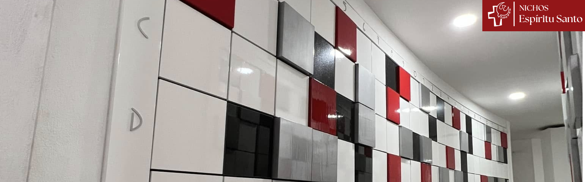

"Un lugar digno y cercano para conservar las cenizas de los fieles difuntos."



En la Parroquia Espíritu Santo contamos
con nichos funerarios pensados para brindar a las familias
un espacio digno, cercano y destinado a conservar las cenizas
de sus seres queridos.
Un lugar dentro de nuestra comunidad parroquial donde el
recuerdo puede permanecer cerca y donde las familias pueden
acudir a orar y mantener viva su memoria.
INFORMACIÓN IMPORTANTE
SÍ ESTÁ AUTORIZADO
La Iglesia Católica reconoce y autoriza la cremación de los cuerpos de los fieles difuntos, de acuerdo con las disposiciones establecidas por la Iglesia.
NICHOS FUNERARIOS
Este espacio está destinado únicamente al depósito y conservación digna de cenizas humanas.
DISPONIBILIDAD INMEDIATA
Todos nuestros nichos se encuentran actualmente disponibles y pueden ser utilizados de manera inmediata.
LOS NICHOS SON EN SU MAYORÍA PARA SEIS URNAS
Cada nicho cuenta con capacidad para el resguardo de hasta seis urnas funerarias. En caso de utilizarse urnas de mayor tamaño, la capacidad disponible podrá disminuir.
CONTRATO Y ESQUEMA DE PAGOS
USTED DEBE NOMBRAR DOS BENEFICIARIOS
Al faltar Usted, los beneficiarios designados podrán adquirir la titularidad correspondiente, de acuerdo con las disposiciones establecidas en el contrato.
ANUALIDAD: cerca de $100 pesos por año.

Ubicación
Los nichos funerarios se encuentran ubicados en el
Sótano del Nuevo Templo Parroquial del Espíritu Santo
Para mayor información
Comuníquense con nosotros en nuestro WhatsApp o nuestro Facebook

WhatsApp:
8180827556